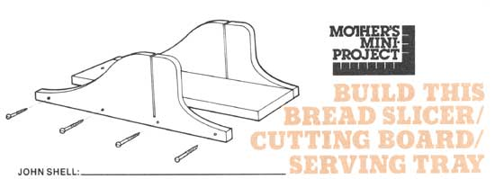
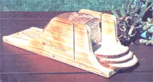

I love my wife's homemade bread but, for the life of me, I've never been able to cut it into straight and even slices. Never, that is, until I hit upon the idea for the combination bread slicer/ cutting board/serving tray you see here. Now I can zip off perfect slices every time ... even paper-thin ones!
My little invention works on the same principle as a carpenter's miter box (as a matter of fact, I got the idea while watching a carpenter friend cut some miter joints). The only difference is that my device was made specifically to handle delicious homemade loaves of bread. Just slide a loaf into place, position the blade of a long, sharp knife in the slots ... and you can't help but cut straight and true.
And?happy surprise!?although this gizmo was designed for bread alone ... it's also ideal for eggplant, squash, cheese, or almost any other sliceable food that'll fit into it.
The whole slicer can be made from one piece of wood measuring 3/4" X 6" X 54". As you can see, the short plank Is cut into three 18"-long lengths ... two of which are shaped as shown (for sides) before being fastened to the third (which forms the slicer's bottom).
Feel free to change the shape of the sides shown here if you think you have another pattern in mind that you like better. Whatever design you decide to use, though, you'll probably find it easiest to put the two pieces of wood together and cut out and slot both sides at the same time. (And those slots, of course, should be cut down far enough so that?on assembly?they'll come out just even with the base's top surface.)
And a final word about dimensions: The slicer shown here is big enough to handle loaves made in most of the bread pans I've seen. If your loaves are bigger (either taller or wider), though, no problem:
Just scale your unit up to fit.
I assembled my slicer/board/ tray with eight 2"-long wood screws (four on a side) as illustrated, and the screws have done the job. If you're the kind who wears both a belt and suspenders, however, you can run a bead of good wood glue down the faces of each joint before you screw the sides of your slicer to its base.
It goes without saying, of course, that you'll sand all surfaces of all three pieces of wood clean before final assembly. And the completed bread slicer can be left unfinished, rubbed with vegetable oil, or stained and coated with a hard, oil-resistant finish (such as polyurethane).
As a little extra touch, my wife had me drill a hole in one end of our slicer's base so we can hang it on the wall when it's not in use. Which means that the newest tool in our kitchen is not only a great bread slicer ... it's a wonderful conversation piece tool!
|
 |
 |
|